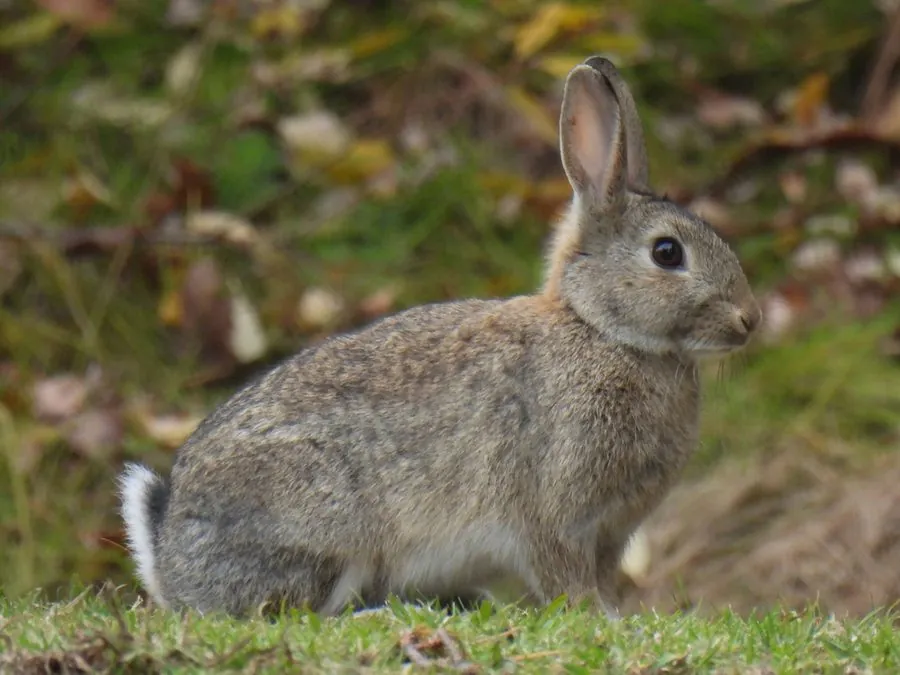

哺乳动物 · 动物界
穴兔 Oryctolagus cuniculus

原产伊比利亚半岛的兔科动物，会挖掘复杂的地下洞穴群，是所有家兔的祖先，因疾病和栖息地丧失被列为濒危。
- 分类
- 门脊索动物门纲哺乳纲目兔形目科兔科属穴兔属
- 栖息环境
- 草地、农田、沙质土壤与海岸沙丘
- 地理分布
- 原产西班牙和葡萄牙，被引入欧洲、澳大利亚、新西兰和美洲
- 保护级别
- IUCN 濒危（EN）；非中国分布物种
物种志
穴兔体长 34–50 厘米，体重 1.2–2.5 千克。它的毛色为灰褐至黄褐色，腹部白色，耳朵较短，后肢强壮；与野兔相比，穴兔的耳朵和四肢都更短，适合在洞穴中活动。所有家兔品种，包括白色、黑色和垂耳兔，都源自穴兔。
穴兔原产于西班牙和葡萄牙所在的伊比利亚半岛，被人类带到欧洲各地、澳大利亚、新西兰和美洲。它栖息在草地、农田和沙质土壤，结成群体挖掘复杂的地下洞穴系统，夜间和晨昏外出觅食，以草、根和农作物为食。雌性妊娠期仅 28–31 天，每年可繁殖多胎，每胎 3–7 仔，寿命约 5–9 年。由于黏液瘤病和兔出血症等疾病，加上栖息地变化，穴兔在原生地被列为濒危。
形态与习性
- 食性草、根与农作物
- 体长34–50 cm
- 体重1.2–2.5 kg
- 寿命5–9 年
- 繁殖妊娠 28–31 天，每胎 3–7 仔
- 洞穴群体挖掘复杂的地下洞穴系统
趣味知识
- 所有家兔品种都源自穴兔，包括白色和垂耳兔。
- 穴兔会挖掘复杂的地下洞穴群，群落可容纳数十只。
- 黏液瘤病和兔出血症使原生地穴兔数量大幅下降。